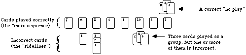

Table of Contents
- 1. Games
- 1.1. House Of Danger
- 1.2. A Fake Artist Goes to New York
- 1.3. Epic Spell Wars of the Battle Wizards: Duel at Mt. Skulllzfyre
- 1.4. Secret Hitler
- 1.5. Dominion
- 1.6. Dominion Seaside
- 1.7. Dominion Dark Ages
- 1.8. Dominion Hinterlands
- 1.9. Betrayal at House on the Hill
- 1.10. Terraforming Mars
- 1.11. Ticket To Ride
- 1.12. Ticket To Ride Europe
- 1.13. 7 Wonders
- 1.14. Ascension
- 1.15. Coup
- 1.16. We Didn’t Playtest This at All
- 1.17. We Didn’t Playtest This Either
- 1.18. Bang!
- 1.19. Exploding Kittens Party Pack
- 1.20. Cards Against Humanity
- 1.21. Joking Hazard
- 1.22. SpyFall
- 1.23. Fluxx
- 1.24. Batman Fluxx
- 1.25. Marvel Flux
- 1.26. Monster Flux
- 1.27. Exploding Kittens + Imploding Kittens + Streaking Kittens
- 1.28. Azul: Stained Glass of Cintra
- 1.29. Concordia
- 1.30. Catan
- 1.31. Star Wars X-Wing
- 1.32. Fog Of Love
- 1.33. Axis & Allies
- 1.34. Pandemic
- 1.35. Kingdom Builder
- 1.36. Carcassonne
- 1.37. Harry Potter Hogwarts Battle
- 1.38. Smash Up
- 1.39. Guillotine
- 1.40. Concept
- 1.41. Bourré
- 1.42. Eleusis
1 Games
1.1 House Of Danger
1.1.1 Description
The classic Choose Your Own Adventure series comes to life in the narrative adventure game Choose Your Own Adventure: House of Danger.
Will you survive the House of Danger? Gather your friends for a perilous and laughter-filled adventure through the House of Danger itself. Make risky choices, collect items as you explore, and face off against dire challenges. Play again and again to uncover more secrets and different endings!
—description from the publisher
| Info | Stat |
|---|---|
| Players | 1 - 99 |
| Play Time | 60 Min |
| Complexity | 1.08 / 5 |
1.2 A Fake Artist Goes to New York
1.2.1 Description
エセ芸術家ニューヨークへ行く – which is pronounced as “Ese Geijutsuka New York e Iku” and can be translated as Fake Artist Goes to New York – is a party game for 5-10 players. Players take turns being the Question Master, whose role is to set a category, write a word within that category on dry erase cards, and hand those out to other players as artists. At the same time, one player will have only an “X” written on his card: they are the fake artist!
Players will then go around the table twice, drawing one contiguous stroke each on a paper to draw the word established by the Question Master, then guess who the fake artist is. If the fake artist is not caught, both the fake artist and the Question Master earn points; if the fake artist is caught and cannot guess what the word is, the artists earn points.
| Info | Stat |
|---|---|
| Players | 5 - 10 |
| Play Time | 20 min |
| Complexity | 1.16 / 5 |
| Type | Party |
| Category | Bluffing |
| Deduciton | |
| Party Game | |
| Mechanics | Line Drawing |
| Role Playing | |
| Targeted Clues |
1.3 Epic Spell Wars of the Battle Wizards: Duel at Mt. Skulllzfyre
1.3.1 Description
Game description from the publisher:
Did you know that magical wizards are battling to the death … and beyond … right now!? “Why battle?” you might ask. “What have I got to prove, magic man?” Only who’s the most awesomely powerful battle wizard in the entire realm, that’s what! As a Battle Wizard, you’ll put together up to three spell components to craft millions (okay, not really) of spell combos. Your spells might kick ass, or they could totally blow – it’s up to you to master the magic. You will unleash massive damage on the faces of your wizard rivals in a no-holds-barred, all-out burn-down to be the last Battle Wizard standing. And it doesn’t stop there! Powerful magic items bring on a whole new level of bloody carnage as you and your mighty wizard opponents tear each other limb from limb in an orgy of killing! Do you have what it takes to use epic spells in a war at Mt. Skullzfyre? Will YOU be the Ultimate Battle Wizard!?!
Epic Spell Wars of the Battle Wizards: Duel at Mt. Skullzfyre is a humorous card game depicting a vicious, over-the-top battle between a variety of comically illustrated wizards. The game focuses primarily on creating three-part spell combos to blast your foes into the afterlife. The unique Dead Wizard cards allow players to stay in the game even after their wizards have been defeated.
| Info | Stat |
|---|---|
| Players | 2-6 |
| Play Time | 30 Min |
| Complexity | 1.58/5 |
| Type | Party |
| Category | Fantasy |
| Fighting | |
| Humor | |
| Mechanics | Dice Rolling |
| Hand Management | |
| Take That |
1.4 Secret Hitler
1.4.1 Description
Secret Hitler is a dramatic game of political intrigue and betrayal set in 1930s Germany. Each player is randomly and secretly assigned to be a liberal or a fascist, and one player is Secret Hitler. The fascists coordinate to sow distrust and install their cold-blooded leader; the liberals must find and stop the Secret Hitler before it’s too late. The liberal team always has a majority.
At the beginning of the game, players close their eyes, and the fascists reveal themselves to one another. Secret Hitler keeps his eyes closed, but puts his thumb up so the fascists can see who he is. The fascists learn who Hitler is, but Hitler doesn’t know who his fellow fascists are, and the liberals don’t know who anyone is.
Each round, players elect a President and a Chancellor who will work together to enact a law from a random deck. If the government passes a fascist law, players must try to figure out if they were betrayed or simply unlucky. Secret Hitler also features government powers that come into play as fascism advances. The fascists will use those powers to create chaos unless liberals can pull the nation back from the brink of war.
The objective of the liberal team is to pass five liberal policies or assassinate Secret Hitler. The objective of the fascist team is to pass six fascist policies or elect Secret Hitler chancellor after three fascist policies have passed.
| Info | Stat |
|---|---|
| Players | 5 - 10 |
| Play Time | 45 Mins |
| Complexity | 1.69 / 5 |
| Type | Party |
| Category | Bluffing |
| Card Game | |
| Deduction | |
| Humor | |
| Party Game | |
| Political | |
| Print & Play | |
| Mechanics | Hidden Roles |
| Player Elimination | |
| Team-Based Game | |
| Voting |
1.5 Dominion
1.5.1 Description
“You are a monarch, like your parents before you, a ruler of a small pleasant kingdom of rivers and evergreens. Unlike your parents, however, you have hopes and dreams! You want a bigger and more pleasant kingdom, with more rivers and a wider variety of trees. You want a Dominion! In all directions lie fiefs, freeholds, and feodums. All are small bits of land, controlled by petty lords and verging on anarchy. You will bring civilization to these people, uniting them under your banner.
But wait! It must be something in the air; several other monarchs have had the exact same idea. You must race to get as much of the unclaimed land as possible, fending them off along the way. To do this you will hire minions, construct buildings, spruce up your castle, and fill the coffers of your treasury. Your parents wouldn’t be proud, but your grandparents, on your mother’s side, would be delighted.“
—description from the back of the box
In Dominion, each player starts with an identical, very small deck of cards. In the center of the table is a selection of other cards the players can “buy” as they can afford them. Through their selection of cards to buy, and how they play their hands as they draw them, the players construct their deck on the fly, striving for the most efficient path to the precious victory points by game end.
Dominion is not a CCG, but the play of the game is similar to the construction and play of a CCG deck. The game comes with 500 cards. You select 10 of the 25 Kingdom card types to include in any given play—leading to immense variety.
—user summary
| Info | Stat |
|---|---|
| Players | 2 - 4 |
| Play Time | 30 Mins |
| Complexity | 2.4 / 5 |
| Type | Strategy |
| Category | Card Game |
| Medieval | |
| Mechanics | Deck Building |
| Delayed Purchase | |
| Hand Management | |
| Take That | |
| Variable Setup |
1.6 Dominion Seaside
1.6.1 Description
Dominion: Seaside is an expansion to both Dominion and Dominion: Intrigue. As such, it does not contain material for a complete game. Specifically, it does not include the basic Treasure, Victory, Curse, or Trash cards. Thus, you will need either the base game or Intrigue to play with this expansion, and you will need to have experience playing Dominion with either of the first two games. It is designed to work with either or both of these sets, and any future expansions that may be published.
From the back of the box: “All you ask is a tall ship and a star to steer her by. And someone who knows how to steer ships using stars. You finally got some of those rivers you’d wanted, and they led to the sea. These are dangerous, pirate-infested waters, and you cautiously send rat-infested ships across them, to establish lucrative trade at far-off merchant-infested ports. First, you will take over some islands, as a foothold. The natives seem friendly enough, crying their peace cries, and giving you spears and poison darts before you are even close enough to accept them properly. When you finally reach those ports you will conquer them, and from there you will look for more rivers. One day, all the rivers will be yours.”
Part of the Dominion series.
| Info | Stat |
|---|---|
| Players | 2 - 4 |
| Play Time | 30 Min |
| Complexity | 2.5 / 5 |
| Type | Strategy |
| Category | Card Game |
| Expansion | |
| Medieval | |
| Nautical | |
| Mechanics | Card Drafting |
| Deck Building | |
| Hand Management |
1.7 Dominion Dark Ages
1.7.1 Description
Game description from the publisher:
Times have been hard. To save on money, you’ve moved out of your old castle and into a luxurious ravine. You didn’t like that castle anyway; it was always getting looted and never at a reasonable hour. And if it wasn’t barbarians it was the plague, or sometimes both would come at once, and there wouldn’t be enough chairs. The ravine is great; you get lots of sun, and you can just drop garbage wherever you want. In your free time you’ve taken up begging. Begging is brilliant conceptually, but tricky in practice since no one has any money. You beg twigs from the villagers, and they beg them back, but no one really seems to come out ahead. That’s just how life is sometimes. You’re quietly conquering people, minding your own business, when suddenly there’s a plague, or barbarians, or everyone’s illiterate, and it’s all you can do to cling to some wreckage as the storm passes through. Still, you are sure that, as always, you will triumph over this adversity, or at least do slightly better than everyone else.
Dominion: Dark Ages is the seventh addition to the game of Dominion. It contains 500 cards but is not a standalone game. It adds 35 new Kingdom cards to Dominion, plus new bad cards you give to other players (Ruins), new cards to replace starting Estates (Shelters), and cards you can get only via specific other cards. The central themes are the trash and upgrading. There are cards that do something when trashed, cards that care about the trash, cards that upgrade themselves, and ways to upgrade other cards.
Part of the Dominion series.
| Info | Stat |
|---|---|
| Players | 2 - 4 |
| Play Time | 30 Min |
| Complexity | 2.73 / 5 |
| Type | Strategy |
| Category | Card Game |
| Expansion | |
| Medieval | |
| Mechanics | Card Drafting |
| Deck Building | |
| Hand Management |
1.8 Dominion Hinterlands
1.8.1 Description
Game description from the publisher:
The world is big and your kingdom small. Small when compared to the world, that is; it’s moderate-sized when compared to other kingdoms. But in a big world like this one - big when compared to smaller worlds anyway, if such things exist; it’s moderate-sized when compared to worlds of roughly the same size, and a little small when compared to worlds just a little larger - well, to make a long story short - short when compared to longer stories anyway - it is time to stretch your borders. You’ve heard of far-off places - exotic countries, where they have pancakes but not waffles, where the people wear the wrong number of shirts, and don’t even have a word for the look two people give each other when they each hope that the other will do something that they both want done but which neither of them wants to do. It is to these lands that you now turn your gaze.
Dominion: Hinterlands is the sixth addition to the game of Dominion. It adds 26 new Kingdom cards to Dominion, including 20 Actions, 3 Treasures, 3 Victory cards, and 3 Reactions. The central theme is cards that do something immediately when you buy them or gain them.
Part of the Dominion series.
| Info | Stat |
|---|---|
| Players | 2 - 4 |
| Play Time | 30 Mins |
| Complexity | 2.55 / 5 |
| Type | Strategy |
| Category | Card Game |
| Expansion | |
| Medieval | |
| Mechanics | Card Drafting |
| Deck Building | |
| Hand Management |
1.9 Betrayal at House on the Hill
1.9.1 Description
From the press release:
Betrayal at House on the Hill quickly builds suspense and excitement as players explore a haunted mansion of their own design, encountering spirits and frightening omens that foretell their fate. With an estimated one hour playing time, Betrayal at House on the Hill is ideal for parties, family gatherings or casual fun with friends.
Betrayal at House on the Hill is a tile game that allows players to build their own haunted house room by room, tile by tile, creating a new thrilling game board every time. The game is designed for three to six people, each of whom plays one of six possible characters.
Secretly, one of the characters betrays the rest of the party, and the innocent members of the party must defeat the traitor in their midst before it’s too late! Betrayal at House on the Hill will appeal to any game player who enjoys a fun, suspenseful, and strategic game.
Betrayal at House on the Hill includes detailed game pieces, including character cards, pre-painted plastic figures, and special tokens, all of which help create a spooky atmosphere and streamline game play.
An updated reprint of Betrayal at House on the Hill was released on October 5, 2010.
| Info | Stat |
|---|---|
| Players | 3 - 6 |
| Play Time | 60 Min |
| Complexity | 2.38 / 5 |
| Type | Thematic |
| Category | Adventure |
| Exploration | |
| Horror | |
| Miniatures | |
| Mechanics | Dice Rolling |
| Map Addition | |
| Modular Board | |
| Player Elimination | |
| Role Playing | |
| Story telling | |
| Team-Based Game | |
| Traitor Game | |
| Variable Player Powers |
1.10 Terraforming Mars
1.10.1 Description
In the 2400s, mankind begins to terraform the planet Mars. Giant corporations, sponsored by the World Government on Earth, initiate huge projects to raise the temperature, the oxygen level, and the ocean coverage until the environment is habitable. In Terraforming Mars, you play one of those corporations and work together in the terraforming process, but compete for getting victory points that are awarded not only for your contribution to the terraforming, but also for advancing human infrastructure throughout the solar system, and doing other commendable things.
The players acquire unique project cards (from over two hundred different ones) by buying them to their hand. The projects (cards) can represent anything from introducing plant life or animals, hurling asteroids at the surface, building cities, to mining the moons of Jupiter and establishing greenhouse gas industries to heat up the atmosphere. The cards can give you immediate bonuses, as well as increasing your production of different resources. Many cards also have requirements and they become playable when the temperature, oxygen, or ocean coverage increases enough. Buying cards is costly, so there is a balance between buying cards (3 megacredits per card) and actually playing them (which can cost anything between 0 to 41 megacredits, depending on the project). Standard Projects are always available to complement your cards.
Your basic income, as well as your basic score, is based on your Terraform Rating (starting at 20), which increases every time you raise one of the three global parameters. However, your income is complemented with your production, and you also get VPs from many other sources.
Each player keeps track of their production and resources on their player boards, and the game uses six types of resources: MegaCredits, Steel, Titanium, Plants, Energy, and Heat. On the game board, you compete for the best places for your city tiles, ocean tiles, and greenery tiles. You also compete for different Milestones and Awards worth many VPs. Each round is called a generation (guess why) and consists of the following phases:
- Player order shifts clockwise.
- Research phase: All players buy cards from four privately drawn.
- Action phase: Players take turns doing 1-2 actions from these options: Playing a card, claiming a Milestone, funding an Award, using a Standard project, converting plant into greenery tiles (and raising oxygen), converting heat into a temperature raise, and using the action of a card in play. The turn continues around the table (sometimes several laps) until all players have passed.
- Production phase: Players get resources according to their terraform rating and production parameters.
When the three global parameters (temperature, oxygen, ocean) have all reached their goal, the terraforming is complete, and the game ends after that generation. Count your Terraform Rating and other VPs to determine the winning corporation!
| Info | Stat |
|---|---|
| Players | 1 - 5 |
| Play Time | 120 Min |
| Complexity | 3.24 / 5 |
| Type | Strategy |
| Category | Economic |
| Environmental | |
| Industry/ Manufacturing | |
| Science Fiction | |
| Space Exploration | |
| Territory Building | |
| Mechanics | Card Drafting |
| End of Game Bonuses | |
| Hand Management | |
| Hexagon Grid | |
| Income | |
| Set Collection | |
| Solo / Solitaire Game | |
| Take That | |
| Tile Placement | |
| Turn Order: Progressive | |
| Variable Player Powers |
1.11 Ticket To Ride
1.11.1 Description
With elegantly simple gameplay, Ticket to Ride can be learned in under 15 minutes. Players collect cards of various types of train cars they then use to claim railway routes in North America. The longer the routes, the more points they earn. Additional points come to those who fulfill Destination Tickets – goal cards that connect distant cities; and to the player who builds the longest continuous route.
“The rules are simple enough to write on a train ticket – each turn you either draw more cards, claim a route, or get additional Destination Tickets,” says Ticket to Ride author, Alan R. Moon. “The tension comes from being forced to balance greed – adding more cards to your hand, and fear – losing a critical route to a competitor.”
Ticket to Ride continues in the tradition of Days of Wonder’s big format board games featuring high-quality illustrations and components including: an oversize board map of North America, 225 custom-molded train cars, 144 illustrated cards, and wooden scoring markers.
Since its introduction and numerous subsequent awards, Ticket to Ride has become the BoardGameGeek epitome of a “gateway game” – simple enough to be taught in a few minutes, and with enough action and tension to keep new players involved and in the game for the duration.
Part of the Ticket to Ride series.
| Info | Stat |
|---|---|
| Players | 2 - 5 |
| Play Time | 30 - 60 Min |
| Complexity | 1.85 / 5 |
| Type | Family |
| Category | Trains |
| Mechanics | Card Drafting |
| Connections | |
| End Game Bonuses | |
| Hand Management | |
| Map Reduction | |
| Network and Route Building | |
| Set Collection |
1.12 Ticket To Ride Europe
1.12.1 Description
Ticket to Ride: Europe takes you on a new train adventure across Europe. From Edinburgh to Constantinople and from Lisbon to Moscow, you’ll visit great cities of turn-of-the-century Europe. Like the original Ticket to Ride, the game remains elegantly simple, can be learned in 5 minutes, and appeals to both families and experienced gamers. Ticket to Ride: Europe is a complete, new game and does not require the original version.
More than just a new map, Ticket to Ride: Europe features brand new gameplay elements. Tunnels may require you to pay extra cards to build on them, Ferries require locomotive cards in order to claim them, and Stations allow you to sacrifice a few points in order to use an opponent’s route to connect yours. The game also includes larger format cards and Train Station game pieces.
The overall goal remains the same: collect and play train cards in order to place your pieces on the board, attempting to connect cities on your ticket cards. Points are earned both from placing trains and completing tickets but uncompleted tickets lose you points. The player who has the most points at the end of the game wins.
Copyright 2002-2014 Days of Wonder, inc.
Part of the Ticket to Ride series.
| Info | Stat |
|---|---|
| Players | 2 - 5 |
| Play Time | 30 - 60 Min |
| Complexity | 1.94 / 5 |
| Type | Family |
| Category | Trains |
| Mechanics | Card Drafting |
| Connections | |
| End Game Bonuses | |
| Hand Management | |
| Map Reduction | |
| Network and Route Building | |
| Set Collection |
1.13 7 Wonders
1.13.1 Description
You are the leader of one of the 7 great cities of the Ancient World. Gather resources, develop commercial routes, and affirm your military supremacy. Build your city and erect an architectural wonder which will transcend future times.
7 Wonders lasts three ages. In each age, players receive seven cards from a particular deck, choose one of those cards, then pass the remainder to an adjacent player. Players reveal their cards simultaneously, paying resources if needed or collecting resources or interacting with other players in various ways. (Players have individual boards with special powers on which to organize their cards, and the boards are double-sided). Each player then chooses another card from the deck they were passed, and the process repeats until players have six cards in play from that age. After three ages, the game ends.
In essence, 7 Wonders is a card development game. Some cards have immediate effects, while others provide bonuses or upgrades later in the game. Some cards provide discounts on future purchases. Some provide military strength to overpower your neighbors and others give nothing but victory points. Each card is played immediately after being drafted, so you’ll know which cards your neighbor is receiving and how his choices might affect what you’ve already built up. Cards are passed left-right-left over the three ages, so you need to keep an eye on the neighbors in both directions.
Though the box of earlier editions is listed as being for 3–7 players, there is an official 2-player variant included in the instructions.
| Info | Stat |
|---|---|
| Players | 2 - 7 |
| Play Time | 30 Min |
| Complexity | 2.33 / 5 |
| Type | Family |
| Strategy | |
| Category | Ancient |
| Card Game | |
| City Building | |
| Civilization | |
| Economic | |
| Mechanics | Card Drafting |
| Drafting | |
| Hand Management | |
| Set Collection | |
| Simultaneous Action Selection | |
| Variable Powers |
1.14 Ascension
1.14.1 Description
Ascension: Deckbuilding Game — originally released as Ascension: Chronicle of the Godslayer — is a fast-paced deck-building game designed by Magic: The Gathering Pro Tour champions Justin Gary, Rob Dougherty, and Brian Kibler, with artwork by Eric Sabee.
Ascension is a deck-building game in which players spend Runes to acquire more powerful cards for their deck. It offers a dynamic play experience where players have to react and adjust their strategy accordingly. Each player starts with a small deck of cards, and uses those cards to acquire more and better cards for their deck, with the goal of earning the most Honor Points by gaining cards and defeating monsters.
| Info | Stat |
|---|---|
| Players | 1 - 4 |
| Play Time | 30 Min |
| Complexity | 2.15 / 5 |
| Type | Strategy |
| Category | Card Game |
| Fanatasy | |
| Mechanics | Card Drafting |
| Deck Building | |
| Hand Managment |
1.15 Coup
1.15.1 Description
You are head of a family in an Italian city-state, a city run by a weak and corrupt court. You need to manipulate, bluff and bribe your way to power. Your object is to destroy the influence of all the other families, forcing them into exile. Only one family will survive…
In Coup, you want to be the last player with influence in the game, with influence being represented by face-down character cards in your playing area.
Each player starts the game with two coins and two influence – i.e., two face-down character cards; the fifteen card deck consists of three copies of five different characters, each with a unique set of powers:
- Duke: Take three coins from the treasury. Block someone from taking foreign aid.
- Assassin: Pay three coins and try to assassinate another player’s character.
- Contessa: Block an assassination attempt against yourself. Captain: Take two coins from another player, or block someone from stealing coins from you. Ambassador: Draw two character cards from the Court (the deck), choose which (if any) to exchange with your face-down characters, then return two. Block someone from stealing coins from you.
On your turn, you can take any of the actions listed above, regardless of which characters you actually have in front of you, or you can take one of three other actions:
- Income: Take one coin from the treasury. Foreign aid: Take two coins from the treasury. Coup: Pay seven coins and launch a coup against an opponent, forcing that player to lose an influence. (If you have ten coins or more, you must take this action.)
When you take one of the character actions – whether actively on your turn, or defensively in response to someone else’s action – that character’s action automatically succeeds unless an opponent challenges you. In this case, if you can’t (or don’t) reveal the appropriate character, you lose an influence, turning one of your characters face-up. Face-up characters cannot be used, and if both of your characters are face-up, you’re out of the game.
If you do have the character in question and choose to reveal it, the opponent loses an influence, then you shuffle that character into the deck and draw a new one, perhaps getting the same character again and perhaps not.
The last player to still have influence – that is, a face-down character – wins the game!
A new & optional character called the Inquisitor has been added (currently, the only English edition with the Inquisitor included is the Kickstarter Version from Indie Boards & Cards. Copies in stores may not be the Kickstarter versions and may only be the base game). The Inquisitor character cards may be used to replace the Ambassador cards.
- Inquisitor: Draw one character card from the Court deck and choose whether or not to exchange it with one of your face-down characters. OR Force an opponent to show you one of their character cards (their choice which). If you wish it, you may then force them to draw a new card from the Court deck. They then shuffle the old card into the Court deck. Block someone from stealing coins from you.
| Info | Stat |
|---|---|
| Players | 2 - 6 |
| Play Time | 15 Min |
| Complexity | 1.41 / 5 |
| Type | Party |
| Category | Bluffing |
| Card Game | |
| Deduction | |
| Party Game | |
| Political | |
| Mechanics | Hidden Roles |
| Memory | |
| Player Elimination | |
| Take That | |
| Variable Player Powers |
1.16 We Didn’t Playtest This at All
1.16.1 Description
From the publisher’s website:
“The most aptly named game ever!
In this exceptionally silly and awesome game, your objective is to win! Simple enough. Sadly, all of your opponents have the same simple goal, and they’re trying to make you lose. Between Rock Paper Scissors battles, being eaten by a random Dragon, or saved by a Kitten Ambush, there are many hazards to avoid.“
Play Summary
Everyone starts with 2 cards. On your turn, draw one card from the deck, and then play one from your hand following the instructions on the card. There are many hazards to avoid, including: bombs, dragons, arrows, laser pointers, black holes, Rock Paper Scissors battles, number battles, zombies, etc. Luckily items abound that can save you, too: spaceships, science, shields, dinosaurs and a kitten ambush!
There are Star Cards: they are clearly superior to normal cards. Every player has an equal chance of drawing a Star Card from the deck.
| Info | Stat |
|---|---|
| Players | 2 - 10 |
| Play Time | 1 - 10 min |
| Complexity | 1.09 / 5 |
| Type | Party |
| Category | Card Game |
| Party Game | |
| Humor | |
| Mechanics | Hand Management |
| Memory | |
| Player Elimination | |
| Rock-Paper-Scissors |
1.17 We Didn’t Playtest This Either
1.17.1 Description
Many will enter, some will win. All will laugh.
We are back with more random! And you like random. Or you will, soon! A full new set of cards that can be played with the original game, or on their own. Be sure to watch out for sharks! And cake. Especially the cake.
Play Summary (from We Didn’t Playtest This At All)
Everyone starts with 2 cards. On your turn, draw one card from the deck, and then play one from your hand following the instructions on the card. There are many hazards to avoid, including: bombs, dragons, arrows, laser pointers, arrows, black holes, Rock Paper Scissors battles, number battles, zombies, etc. Luckily items abound that can save you, too: spaceships, science, shields, dinosaurs and a kitten ambush!
This is a standalone game that may be integrated with We Didn’t Playtest This At All.
| Info | Stat |
|---|---|
| Players | 2 - 10 |
| Play Time | 1 - 10 Min |
| Complexity | 1.21 / 5 |
| Type | Party |
| Category | Card Game |
| Humor | |
| Party Game | |
| Mechanics | Hand Management |
| Rock-Paper-Scissors | |
| Voting |
1.18 Bang!
1.18.1 Description
BANG! The Bullet 2nd Edition:
- BANG! 4th edition (no player mats or bullet tokens)
- Dodge City 3rd edition
- High Noon 2nd Edition
- A Fistful Of Cards 2nd Edition
- Two Exclusive High Noon cards - “New Identity” and “Handcuffs”
- Three new characters - Uncle Will, Johnny Kisch, and Claus “The Saint”
- Two blank cards
- One silver sheriff badge
Reprinted in June 2009
| Info | Stat |
|---|---|
| Players | 3 - 8 |
| Play Time | 20 - 40 |
| Complexity | 1.84 / 5 |
| Type | Party |
| Category | American West |
| Bluffing | |
| Card Game | |
| Deduction | |
| Fighting | |
| Humor | |
| Mechanics | Hand Management |
| Player Elimination | |
| Take That | |
| Team-Based Game | |
| Variable Player Powers |
1.19 Exploding Kittens Party Pack
1.19.1 Description
This stand-alone game includes cards from Exploding Kittens, Imploding Kittens and the Exploding Kittens App and allows 2-10 players
Exploding Kittens is a kitty-powered version of Russian Roulette. Players take turns drawing cards until someone draws an exploding kitten and loses the game. The deck is made up of cards that let you avoid exploding by peeking at cards before you draw, forcing your opponent to draw multiple cards, or shuffling the deck.
| Info | Stat |
|---|---|
| Players | 2 - 10 |
| Play Time | 15 Min |
| Complexity | 1 / 5 |
| Type | Party |
| Category | Animals |
| Card Game | |
| Humor | |
| Mechanics | Hand Management |
| Player Elimination | |
| Push Your Luck | |
| Set Collection | |
| Take That |
1.20 Cards Against Humanity
1.20.1 Description
“A party game for horrible people.”
Play begins with a judge, known as the “Card Czar”, choosing a black question or fill-in-the-blank card from the top of the deck and showing it to all players. Each player holds a hand of ten white answer cards at the beginning of each round, and passes a card (sometimes two) to the Card Czar, face-down, representing their answer to the question on the card. The card czar determines which answer card(s) are funniest in the context of the question or fill-in-the-blank card. The player who submitted the chosen card(s) is given the question card to represent an “Awesome Point”, and then the player to the left of the new Card Czar becomes the new Czar for the next round. Play continues until the players agree to stop, at which point the player with the most Awesome Points is the winner.
This, so far, sounds like the popular and fairly inoffensive Apples to Apples. While the games are similar, the sense of humor required is very different. The game encourages players to poke fun at practically every awkward or taboo subject including race, religion, gender, poverty, torture, alcoholism, drugs, sex (oh yes), abortion, child abuse, celebrities, and those everyday little annoyances like “Expecting a burp and vomiting on the floor”.
In addition, there are a few extra rules. First, some question cards are “Pick 2” or cards, which require each participant to submit two cards in sequence to complete their answer. Second, a gambling component also exists. If a question is played which a player believes they have two possible winning answers for, they may bet an Awesome Point to play a single second answer. If the player who gambled wins, they retain the wagered point, but if they lose, the player who contributed the winning answer takes both points.
From the website:
“Cards Against Humanity is distributed under a Creative Commons Attribution-Noncommercial-Share Alike license - that means you can use and remix the game for free, but you can’t sell it. Feel free to contact us at cardsagainsthumanity@gmail.com.”
| Info | Stat |
|---|---|
| Players | 4 - 30 |
| Play Time | 30 Min |
| Complexity | 1.2 / 5 |
| Type | Party |
| Category | Card Game |
| Humor | |
| Mature / Adult | |
| Party Game | |
| Print & Play | |
| Mechanics | Hand Management |
| Player Judge | |
| Simultaneous Action Selection |
1.21 Joking Hazard
1.21.1 Description
From the creators of Cyanide & Happiness comes a card game where players compete to finish an awful comic strip.
The creators said:
“Someone on the Internet once told us that making stick figure comics is easy as hell, and that we were ugly and stupid.
They were right on all counts. So, after crying for a few hours, we created the Random Comic Generator which since its inception in 2014 has entertained millions with its computer-generated comedy.
After a few weeks of playing with the Random Comic Generator, we started to wonder if its hundreds of random panels might lend themselves to a card game, where you compete against your friends to finish a comic with a funny punchline. So we printed out all of the RCG panels and started playing with them.“
Draw 7 cards. The deck plays the first card, select a Judge to play the second, then everyone selects a third card to create a three panel comic strip. The Judge picks a winner.
The game includes a deck of 250 unique panel cards - that’s 15.4 million combinations of comics!
| Info | Stat |
|---|---|
| Players | 3 - 10 |
| Play Time | 30 - 90 |
| Complexity | 1.06 / 5 |
| Type | Party |
| Category | Card Game |
| Humor | |
| Mature / Adult | |
| Party Game | |
| Mechanics | Hand Management |
| Player Judge | |
| Simulaneous Action |
1.22 SpyFall
1.22.1 Description
Spyfall is a party game unlike any other, one in which you get to be a spy and try to understand what’s going on around you. It’s really simple!
Spyfall is played over several rounds, and at the start of each round all players receive cards showing the same location — a casino, a traveling circus, a pirate ship, or even a space station — except that one player receives a card that says “Spy” instead of the location. Players then start asking each other questions — “Why are you dressed so strangely?” or “When was the last time we got a payday?” or anything else you can come up with — trying to guess who among them is the spy. The spy doesn’t know where he is, so he has to listen carefully. When it’s his time to answer, he’d better create a good story!
At any time during a round, one player may accuse another of being a spy. If all other players agree with the accusation, the round ends and the accused player has to reveal his identity. If the spy is uncovered, all other players score points. However, the spy can himself end a round by announcing that he understands what the secret location is; if his guess is correct, only the spy scores points.
After a few rounds of guessing, suspicion and bluffing, the game ends and whoever has scored the most points is victorious!
| Info | Stat |
|---|---|
| Players | 3 - 8 |
| Play Time | 15 Min |
| Complexity | 1.24 / 5 |
| Type | Party |
| Category | Bluffing |
| Deduction | |
| Humor | |
| Party Game | |
| Spies / Secret Agents | |
| Mechanics | Acting |
| Memory Role Playing | |
| Roles with Asymmetric Information | |
| Targeted Clues | |
| Trator Game | |
| Voting |
1.23 Fluxx
1.23.1 Description
Fluxx is a card game in which the cards themselves determine the current rules of the game. By playing cards, you change numerous aspects of the game: how to draw cards, how to play cards, and even how to win.
At the start of the game, each player holds three cards and on a turn a player draws one card, then plays one card. By playing cards, you can put new rules into play that change numerous aspects of the game: how many cards to draw or play, how many cards you can hold in hand or keep on the table in front of you, and (most importantly) how to win the game. There are many editions, themed siblings, and promo cards available.
| Info | Stat |
|---|---|
| Players | 2 - 6 |
| Play Time | 5 - 30 |
| Complexity | 1.39 / 5 |
| Type | Family |
| Party | |
| Category | Card Game |
| Mechanics | Hand Management |
| Set Collection |
1.24 Batman Fluxx
1.24.1 Description
Batman flavored variant of Flux
| Info | Stat |
|---|---|
| Players | 2 - 6 |
| Play Time | 5 - 30 |
| Complexity | 1.39 / 5 |
| Type | Family |
| Party | |
| Category | Card Game |
| Mechanics | Hand Management |
| Set Collection |
1.25 Marvel Flux
1.25.1 Description
Marvel flavored variant of Flux
| Info | Stat |
|---|---|
| Players | 2 - 6 |
| Play Time | 5 - 30 |
| Complexity | 1.39 / 5 |
| Type | Family |
| Party | |
| Category | Card Game |
| Mechanics | Hand Management |
| Set Collection |
1.26 Monster Flux
1.26.1 Description
Monster flavored variant of Flux
| Info | Stat |
|---|---|
| Players | 2 - 6 |
| Play Time | 5 - 30 |
| Complexity | 1.39 / 5 |
| Type | Family |
| Party | |
| Category | Card Game |
| Mechanics | Hand Management |
| Set Collection |
1.27 Exploding Kittens + Imploding Kittens + Streaking Kittens
1.27.1 Description
Exploding Kittens is a kitty-powered version of Russian Roulette. Players take turns drawing cards until someone draws an exploding kitten and loses the game. The deck is made up of cards that let you avoid exploding by peeking at cards before you draw, forcing your opponent to draw multiple cards, or shuffling the deck.
The game gets more and more intense with each card you draw because fewer cards left in the deck means a greater chance of drawing the kitten and exploding in a fiery ball of feline hyperbole.
| Info | Stat |
|---|---|
| Players | 2 - 5 |
| Play Time | 15 Min |
| Complexity | 1.07 / 5 |
| Type | Party |
| Category | Animals |
| Card Game | |
| Humor | |
| Mechanics | Hand Management |
| Hot Potato | |
| Player Elimination | |
| Push Your Luck | |
| Set Collection | |
| Take That |
1.28 Azul: Stained Glass of Cintra
1.28.1 Description
Created by Michael Kiesling, Azul: Stained Glass of Sintra challenges players to carefully select glass panes to complete their windows while being careful not to damage or waste supplies in the process. The window panels are double-sided, providing players with a dynamic player board that affords nearly infinite variability!
Players can expect to discover new unique art and components in Azul: Stained Glass of Sintra, including translucent window pane pieces, a tower to hold discarded glass panes, and double-sided player boards and window pane panels, in addition to many other beautiful components!
—description from the publisher
| Info | Stat |
|---|---|
| Players | Family |
| Play Time | 2 - 4 |
| Complexity | 1.97 / 5 |
| Type | Family |
| Category | Abstract Strategy |
| Renaissance | |
| Mechanics | Card Drafting |
| Drafting | |
| End Game Bonuses | |
| Pattern Building | |
| Set Collection | |
| Tile Placement | |
| Turn Order: Claim Action |
1.29 Concordia
1.29.1 Description
Two thousand years ago, the Roman Empire ruled the lands around the Mediterranean Sea. With peace at the borders, harmony inside the provinces, uniform law, and a common currency, the economy thrived and gave rise to mighty Roman dynasties as they expanded throughout the numerous cities. Guide one of these dynasties and send colonists to the remote realms of the Empire; develop your trade network; and appease the ancient gods for their favor — all to gain the chance to emerge victorious!
Concordia is a peaceful strategy game of economic development in Roman times for 2-5 players aged 13 and up. Instead of looking to the luck of dice or cards, players must rely on their strategic abilities. Be sure to watch your rivals to determine which goals they are pursuing and where you can outpace them! In the game, colonists are sent out from Rome to settle down in cities that produce bricks, food, tools, wine, and cloth. Each player starts with an identical set of playing cards and acquires more cards during the game. These cards serve two purposes:
They allow a player to choose actions during the game. They are worth victory points (VPs) at the end of the game.
Concordia is a strategy game that requires advance planning and consideration of your opponent’s moves. Every game is different, not only because of the sequence of new cards on sale but also due to the modular layout of cities. (One side of the game board shows the entire Roman Empire with 30 cities for 3-5 players, while the other shows Roman Italy with 25 cities for 2-4 players.) When all cards have been sold or after the first player builds his 15th house, the game ends. The player with the most VPs from the gods (Jupiter, Saturnus, Mercurius, Minerva, Vesta, etc.) wins the game.
| Info | Stat |
|---|---|
| Players | 2 - 5 |
| Play Time | 100 Min |
| Complexity | 3.04 / 5 |
| Type | Strategy |
| Category | Ancient |
| Economic | |
| Nautical | |
| Mechanics | Action Retrieval |
| Advantage Token | |
| Card Drafting | |
| Hand Management | |
| Movement Points | |
| Moving Multiple Units | |
| Point to Point Movement | |
| Variable Setup |
1.30 Catan
1.30.1 Description
In Catan (formerly The Settlers of Catan), players try to be the dominant force on the island of Catan by building settlements, cities, and roads. On each turn dice are rolled to determine what resources the island produces. Players collect these resources (cards)—wood, grain, brick, sheep, or stone—to build up their civilizations to get to 10 victory points and win the game.
Setup includes randomly placing large hexagonal tiles (each showing a resource or the desert) in a honeycomb shape and surrounding them with water tiles, some of which contain ports of exchange. Number disks, which will correspond to die rolls (two 6-sided dice are used), are placed on each resource tile. Each player is given two settlements (think: houses) and roads (sticks) which are, in turn, placed on intersections and borders of the resource tiles. Players collect a hand of resource cards based on which hex tiles their last-placed house is adjacent to. A robber pawn is placed on the desert tile.
A turn consists of possibly playing a development card, rolling the dice, everyone (perhaps) collecting resource cards based on the roll and position of houses (or upgraded cities—think: hotels) unless a 7 is rolled, turning in resource cards (if possible and desired) for improvements, trading cards at a port, and trading resource cards with other players. If a 7 is rolled, the active player moves the robber to a new hex tile and steals resource cards from other players who have built structures adjacent to that tile.
Points are accumulated by building settlements and cities, having the longest road and the largest army (from some of the development cards), and gathering certain development cards that simply award victory points. When a player has gathered 10 points (some of which may be held in secret), he announces his total and claims the win.
Catan has won multiple awards and is one of the most popular games in recent history due to its amazing ability to appeal to experienced gamers as well as those new to the hobby.
Die Siedler von Catan was originally published by KOSMOS and has gone through multiple editions. It was licensed by Mayfair and has undergone four editions as The Settlers of Catan. In 2015, it was formally renamed Catan to better represent itself as the core and base game of the Catan series. It has been re-published in two travel editions, portable edition and compact edition, as a special gallery edition (replaced in 2009 with a family edition), as an anniversary wooden edition, as a deluxe 3D collector’s edition, in the basic Simply Catan, as a beginner version, and with an entirely new theme in Japan and Asia as Settlers of Catan: Rockman Edition. Numerous spin-offs and expansions have also been made for the game.
| Info | Stat |
|---|---|
| Players | 3 - 4 |
| Play Time | 60 - 120 |
| Complexity | 2.33 / 5 |
| Type | Family |
| Strategy | |
| Category | Economic |
| Negotiation | |
| Mechanics | Dice Rolling |
| Hexagon Grid | |
| Income | |
| Modular Board | |
| Network and Route Building | |
| Race | |
| Random Production | |
| Trading | |
| Variable Setup |
1.31 Star Wars X-Wing
1.31.1 Description
Star Wars: X-Wing Miniatures Game is a tactical ship-to-ship combat game in which players take control of powerful Rebel X-wings and nimble Imperial TIE fighters, facing them against each other in fast-paced space combat. Featuring stunningly detailed and painted miniatures, the X-Wing Miniatures Game recreates exciting Star Wars space combat throughout its several included scenarios. Select your crew, plan your maneuvers, and complete your mission!
Whatever your chosen vessel, the rules of X-Wing facilitate fast and visceral gameplay that puts you in the middle of Star Wars fiercest firefights. Each ship type has its own unique piloting dial, which is used to secretly select a speed and maneuver each turn. After planning maneuvers, each ship’s dial is revealed and executed (starting with the lowest skilled pilot). So whether you rush headlong toward your enemy showering his forward deflectors in laser fire, or dance away from him as you attempt to acquire a targeting lock, you’ll be in total control throughout all the tense dogfighting action.
Star Wars: X-Wing features (three) unique missions, and each has its own set of victory conditions and special rules; with such a broad selection of missions, only clever and versatile pilots employing a range of tactics will emerge victorious. What’s more, no mission will ever play the same way twice, thanks to a range of customization options, varied maneuvers, and possible combat outcomes. Damage, for example, is determined through dice and applied in the form of a shuffled Damage Deck. For some hits your fighter sustains, you’ll draw a card that assigns a special handicap. Was your targeting computer damaged, affecting your ability to acquire a lock on the enemy? Perhaps an ill-timed weapon malfunction will limit your offensive capabilities. Or worse yet, your pilot could be injured, compromising his ability to focus on the life-and-death struggle in which he is engaged…
The Star Wars: X-Wing starter set includes everything you need to begin your battles, such as scenarios, cards, and fully assembled and painted ships. What’s more, Star Wars: X-Wing’s quick-to-learn ruleset establishes the foundation for a system that can be expanded with your favorite ships and characters from the Star Wars universe.
Reimplemented by Star Wars: X-Wing (Second Edition)
| Info | Stat |
|---|---|
| Players | 2 |
| Play Time | 30 - 45 |
| Complexity | 2.48 / 5 |
| Type | Customizable |
| Wargames | |
| Category | Aviation / Flight |
| Bluffing | |
| Collectible Components | |
| Miniatures | |
| Movies / Tv / Radio theme | |
| Science Fiction | |
| Wargame | |
| Mechanics | Action Queue |
| Cretical Hits and Failures | |
| Dice Rolling | |
| Movement Template | |
| Player Elimination | |
| Simulation | |
| Simultaneous Action Selection | |
| Variable Player Powers |
1.32 Fog Of Love
1.32.1 Description
Fog of Love is a game for two players. You will create and play two vivid characters who meet, fall in love and face the challenge of making an unusual relationship work.
Playing Fog of Love is like being in a romantic comedy: roller-coaster rides, awkward situations, lots of laughs and plenty of difficult compromises to make.
Much as in a real relationship, goals might be at odds. You can try to change, keep being relentless or even secretly decide to be a Heartbreaker. It’s your choice.
The happily ever after won’t be certain, but whatever way your zigzag romance unfolds, you’ll always end up with a story full of surprises – guaranteed to raise a smile!
| Info | Stat |
|---|---|
| Players | 2 |
| Play Time | 60 - 120 |
| Complexity | 2.27 / 5 |
| Type | Thematic |
| Category | Bluffing |
| Card Game | |
| Deduction | |
| Mechanics | Cooperative Game |
| Hand Management | |
| Role Playing | |
| Simulation | |
| Simultaneous Action Selection | |
| Storytelling |
1.33 Axis & Allies
1.33.1 Description
Axis & Allies (2004) aka Axis & Allies Revised Edition is the first Avalon Hill version of the classic light weight war game Axis & Allies. The game simulates the entire scope of World War II.
The game is nominally designed for five players, representing the Allies: United States of America, United Kingdom and Russia vs. the Axis: Germany and Japan. However, it is most often played as a two-player game.
Axis & Allies features a simple dice-based combat system; a small number of types of naval, air and land units; territory control; and technology research to improve unit capabilities.
Major new features of Axis & Allies (2004) include new units (e.g. destroyers, artillery), revised unit capabilities (e.g. armor defend at 3, fighters cost 10 IPCs), directed technology research, and totally new victory conditions (key territories must be controlled to win the game).
| Info | Stat |
|---|---|
| Players | 2 - 5 |
| Play Time | 240 Min |
| Complexity | 3.21 / 5 |
| Type | Wargames |
| Category | Economic |
| War game | |
| World War II | |
| Mechanics | Area Movement |
| Dice Rolling | |
| Team-Based Game |
1.34 Pandemic
1.34.1 Description
In Pandemic, several virulent diseases have broken out simultaneously all over the world! The players are disease-fighting specialists whose mission is to treat disease hotspots while researching cures for each of four plagues before they get out of hand.
The game board depicts several major population centers on Earth. On each turn, a player can use up to four actions to travel between cities, treat infected populaces, discover a cure, or build a research station. A deck of cards provides the players with these abilities, but sprinkled throughout this deck are Epidemic! cards that accelerate and intensify the diseases’ activity. A second, separate deck of cards controls the “normal” spread of the infections.
Taking a unique role within the team, players must plan their strategy to mesh with their specialists’ strengths in order to conquer the diseases. For example, the Operations Expert can build research stations which are needed to find cures for the diseases and which allow for greater mobility between cities; the Scientist needs only four cards of a particular disease to cure it instead of the normal five—but the diseases are spreading quickly and time is running out. If one or more diseases spreads beyond recovery or if too much time elapses, the players all lose. If they cure the four diseases, they all win!
The 2013 edition of Pandemic includes two new characters—the Contingency Planner and the Quarantine Specialist—not available in earlier editions of the game.
Pandemic is the first game in the Pandemic series.
| Info | Stat |
|---|---|
| Players | 2 - 4 |
| Play Time | 45 Min |
| Complexity | 2.41 / 5 |
| Type | Family |
| Strategy | |
| Category | Medical |
| Mechanics | Action Points |
| Cooperative Game | |
| Hand Management | |
| Point to Point Movement | |
| Set Collection | |
| Trading | |
| Variable Player Powers |
1.35 Kingdom Builder
1.35.1 Description
In Kingdom Builder, the players create their own kingdoms by skillfully building their settlements, aiming to earn the most gold at the end of the game.
Nine different kinds of terrain are on the variable game board, including locations and castles. During his turn, a player plays his terrain card and builds three settlements on three hexes of this kind. If possible, a new settlement must be built next to one of that player’s existing settlements. When building next to a location, the player may seize an extra action tile that he may use from his next turn on. These extra actions allow extraordinary actions such as moving your settlements.
By building next to a castle, the player will earn gold at the end of the game, but the most gold will be earned by meeting the conditions of the three Kingdom Builder cards; these three cards (from a total of ten in the game) specify the conditions that must be met in order to earn the much-desired gold, such as earning gold for your settlements built next to water hexes or having the majority of settlements in a sector of the board.
Each game, players will use a random set of Kingdom Builder cards (3 of 10), special actions (4 of 8), and terrain sectors to build the map (4 of 8), ensuring you won’t play the same game twice!
Kingdom Builder FAQ - please read before posting questions in the forum.
| Info | Stat |
|---|---|
| Players | 2 - 4 |
| Play Time | 45 Min |
| Complexity | 2.07 / 5 |
| Type | Family |
| Strategy | |
| Category | Medieval |
| Territory Building | |
| Mechanics | Area Majority / Influence |
| Chaining | |
| Enclosure | |
| Hexagon Grid | |
| Modular Board | |
| Variable Setup |
1.36 Carcassonne
1.36.1 Description
Carcassonne is a tile-placement game in which the players draw and place a tile with a piece of southern French landscape on it. The tile might feature a city, a road, a cloister, grassland or some combination thereof, and it must be placed adjacent to tiles that have already been played, in such a way that cities are connected to cities, roads to roads, etcetera. Having placed a tile, the player can then decide to place one of their meeples on one of the areas on it: on the city as a knight, on the road as a robber, on a cloister as a monk, or on the grass as a farmer. When that area is complete, that meeple scores points for its owner.
During a game of Carcassonne, players are faced with decisions like: “Is it really worth putting my last meeple there?” or “Should I use this tile to expand my city, or should I place it near my opponent instead, giving him a hard time to complete their project and score points?” Since players place only one tile and have the option to place one meeple on it, turns proceed quickly even if it is a game full of options and possibilities.
First game in the Carcassonne series.
| Info | Stat |
|---|---|
| Players | 2 - 5 |
| Play Time | 30 - 45 |
| Complexity | 1.92 / 5 |
| Type | Family |
| Category | City Building |
| Medieval | |
| Territory Building | |
| Mechanics | Area Majority / Influence |
| Map Addition | |
| Tile Palacement |
1.37 Harry Potter Hogwarts Battle
1.37.1 Description
The forces of evil are threatening to overrun Hogwarts castle in Harry Potter: Hogwarts Battle, a cooperative deck-building game, and it’s up to four students to ensure the safety of the school by defeating villains and consolidating their defenses. In the game, players take on the role of a Hogwarts student: Harry, Ron, Hermione or Neville, each with their own personal deck of cards that’s used to acquire resources.
By gaining influence, players add more cards to their deck in the form of iconic characters, spells, and magical items. Other cards allow them to regain health or fight against villains, keeping them from gaining power. The villains set back players with their attacks and Dark Arts. Only by working together will players be able to defeat all of the villains, securing the castle from the forces of evil.
—description from the publisher
| Info | Stat |
|---|---|
| Players | 2 - 4 |
| Play Time | 30 - 60 |
| Complexity | 2.09 / 5 |
| Type | Strategy |
| Thematic | |
| Category | Card Game |
| Fantasy | |
| Movies / Tv / Radio theme | |
| Novel-based | |
| Mechanics | Cooperative Game |
| Deck Building | |
| Variable Player Powers |
1.38 Smash Up
1.38.1 Description
| Info | Stat |
|---|---|
| Players | |
| Play Time | |
| Complexity | |
| Type | |
| Category | |
| Mechanics |
1.39 Guillotine
1.39.1 Description
The French Revolution is famous in part for the use of the guillotine to put nobles to death, and this is the macabre subject of this light card game. As executioners pandering to the masses, the players are trying to behead the least popular nobles. Each day the nobles are lined up and players take turns killing the ones at the front of the line until all the nobles are gone. However, players are given cards which will manipulate the line order right before ’harvesting,’ which is what makes the game interesting. After three days worth of chopping, the highest total carries the day.
| Info | Stat |
|---|---|
| Players | 2 - 5 |
| Play Time | 30 Min |
| Complexity | 1.27 / 5 |
| Type | Family |
| Category | Card Game |
| Humor | |
| Mechanics | Card Drafting |
| Hand Management | |
| Take That |
1.40 Concept
1.40.1 Description
In Concept, your goal is to guess words through the association of icons. A team of two players – neighbors at the table – choose a word or phrase that the other players need to guess. Acting together, this team places pieces judiciously on the available icons on the game board.
To get others to guess “milk”, for example, the team might place the question mark icon (which signifies the main concept) on the liquid icon, then cubes of this color on the icons for “food/drink” and “white”. For a more complicated concept, such as “Leonardo DiCaprio”, the team can use the main concept and its matching cubes to clue players into the hidden phrase being an actor or director, while then using sub-concept icons and their matching cubes to gives clues to particular movies in which DiCaprio starred, such as Titanic or Inception.
The first player to discover the word or phrase receives 2 victory points, the team receives points as well, and the player who ends up with the most points wins.
| Info | Stat |
|---|---|
| Players | 4 - 12 |
| Play Time | 40 Min |
| Complexity | 1.40 / 5 |
| Type | Party |
| Category | Deduction |
| Party Game | |
| Mechanics | Communication Limits |
| Team-Based Game |
1.41 Bourré
1.41.1 Description
Bourre (pronounced “boo-ray”) is a trick-taking card game similar to Spades. It is widely played in Louisiana, particularly within the Cajun culture and on the off-shore oil platforms near the Louisiana Gulf Coast.
Bourre uses a standard 52-card deck. Players ante up and are dealt a five card hand. They may then “fold” or continue, swapping out up to all five cards (in some variants they will re-ante to play a hand). The rules are fairly straightforward: (from Wikipedia entry):
- You must play to win. This goes beyond simply “playing a higher card”; if you know that no one else has any trumps, and it is your turn to lead, you must play trumps if you have them.
- You must play on-suit if possible, even if your highest on-suit card will not beat the highest card in play. Even if a trump has been played on a non-trump lead, if you have a card of the suit led, you must play on that suit.
- You must play a trump if you have no on-suit cards. You still must play to win; if the only trump played is a 3, you hold the 2 and the Ace of trumps but no cards of the lead suit, you must play the Ace of trumps.
- If you have neither any cards of the lead suit nor any trumps, you may play any card. This is an off card, and is effectively lower than the 2 of the lead suit.
At the end of the round, the person with the most tricks, takes the pot. If there is a tie, the pot stays in for the next round. If one of the players who played a hand did not take any tricks at all, he is said to have “bourreed” and must match the pot as his ante for the next round. Needless to say, the pot can get quite large, especially with larger groups playing.
| Info | Stat |
|---|---|
| Players | 2 - 8 |
| Play Time | 30 Min |
| Complexity | 1.67 / 5 |
| Type | Gambling |
| Category | Card Game |
| Mechanics | Trick-taking |
1.41.2 Introduction
This gambling game is popular in Louisiana, USA. Although it is a trick-taking game unrelated to Poker, it has become known to Poker players in North America as an alternative choice in home Poker games. The game is of French origin. It is a descendant of Bourre, a three-card game which was popular in southwest France in the early 20th century, which was probably descended in turn from the Spanish game Burro (“donkey”). In the French game a player who plays and takes no tricks is said to be “bourré”, and it is this term that gives its name to the Louisiana game Bourré, which is sometimes spelled with just one ’r’: (bouré). Sometimes this is altered to “bourre” or “boure” by American writers unfamiliar with French accents, and often it is written “booray” or “boo-ray” which in American spelling approximates the French pronunciation of bourré.
The information on this page relies heavily on the book Bouré by Roy J Nickens (Baton Rouge, 1972) as well as correspondence from John May, Brad Duhon, Victoria Diemer and others.
1.41.3 Players and Cards
The game is best for seven players. In theory any number from two to eight can play, but with fewer than about five players the game becomes less interesting.
A standard international 52-card pack without jokers is used. The cards of each suit rank from high to low: A-K-Q-J-10-9-8-7-6-5-4-3-2.
1.41.4 Ante and Deal
Before the first deal each player must contribute an ante of one chip to the pot. Before subsequent deals, certain players may not have to pay an ante, depending on the result of the previous hand - see below.
Any player who wishes to may shuffle and the dealer has the right to shuffle last. The cards must then be cut by the player to dealer’s right.
The dealer deals out the cards one at a time, starting with the player to dealer’s left and continuing clockwise until each player has five cards. Cards are dealt face down, except for the dealer’s fifth and last card, which is dealt face up. The suit of this card indicates the trump suit.
The turn to deal passes to the left after each hand.
1.41.5 Draw or Pass
Players pick up their cards and look at them, but may not show their cards to anyone else.
Beginning with the player to dealer’s left, each player in clockwise order must declare whether he or she will pass or play, and if playing, how many cards he or she wishes to discard.
If you pass, you stack your cards face down in front of you.and take no further part in the play of the hand. You can no longer win the pot on that deal, nor can you lose any additional chips.
If you play, you may discard some of your cards face down, announcing how many you are discarding. The dealer then deals you an equal number of replacement cards from the undealt part of the deck. You may discard your whole hand of five cards if you wish to, or if you are happy with your original cards you may stand pat and play with the hand you were dealt, discarding nothing.
It may happen, especially in an eight-player game, that the dealer runs out of cards to deal before all the players who wish to play have been served with replacements for their discards. In that case the dealer gathers up all the discarded cards and passed hands from the players who have already acted (but not the discards of the player who is currently being served). These cards are shuffled and cut and used to continue dealing cards to replace any remaining discards.
If the turned up trump card is an ace, the dealer must play. There is no risk in doing so since the ace of trumps always wins a trick.
If only one player elects to play, all the others passing, the lone player is deemed to have won all five tricks by default, and this player therefore collects the whole pot without playing out any cards. If all players other than the dealer pass, the dealer should of course play and collect the pot.
You should be careful not to make any premature announcement or gesture indicating whether you intend to play or pass or how many cards you might discard, before it is your turn to act. The penalty is to forfeit your next turn to deal.
1.41.6 The Play
The player to dealer’s left, or if this player has passed, the next player in clockwise rotation who is playing, leads to the first trick. Thereafter the winner of each trick leads to the next.
A card is led by placing it face up in the centre of the table. Each of the other active players (those who have not passed) in clockwise order must also play a card face up in the centre. When all have played a card, the trick is complete. It is won by whoever played the highest card of the trump suit, or if no trump was played, by whoever played the highest card of the suit that was led.
The play of the cards is governed by strict rules.
- Players must always “follow suit” if able to - that is, all but the first to play to a trick must play a card of the same suit as the card that was led.
- Any player who is unable to follow suit, having no card of the suit that was led, must play a trump if able to.
- Subject to the requirement to follow suit, each player must play a card that beats the highest card so far played to the trick if possible.
A player who is unable to beat the highest card played to the trick, is still forced to follow suit if possible, and otherwise to trump. If the trick has already been trumped, and you are unable to follow suit, you must overtrump if possible, but if your trumps are not high enough to overtrump, you must still play a trump.
However, if you are unable to beat the highest card in the trick, you are under no obligation to play a high card, provided that you obey the rules of following suit or trumping. Example: spades are trumps and the queen of diamonds is led. The second player trumps with the four of spades. Playing third, you hold the ace and six of diamonds and some spades. You have diamonds so you are not allowed to trump, and therefore cannot win the trick. You can and should play your six of diamonds, not the ace. If the second player had played a diamond, you would have been obliged to play the ace of diamonds, to beat the queen.
A player who has no card of the suit led and has no trumps either can play any card, but of course cannot win the trick.
If the dealer is playing, the dealer’s card that was dealt face up to determine the trump suit counts as belonging to the dealer’s hand (except in the very unusual case that the dealer chose to discard it) and is played in accordance with the rules of play above.
A player who has three sure tricks irrespective of how the cards are played, and is therefore certain to win the pot, is said to have a cinch. In this case there are additional restrictions.
- If you have a cinch and it is your turn to lead, you must lead your highest trump.
- If you have a cinch and are playing on a trick to which another player led, and you are able to play a trump to the trick, you must play your highest trump.
- If you have a cinch and are playing last to a trick, there are no special restrictions - you must simply win the trick if you can, subject to the usual restrictions of following suit and trumping.
Note that your hand can be a cinch at the start of the play if you have a trump holding such as A-K-Q or K-Q-10-9-8. It can become a cinch later, for example if after winning a trick you have two sure trump tricks. Also, if you win the first three tricks, the cinch rules apply since you are sure to take the pot, and you must lead a trump to the fourth trick if you have one.
When you are required to play your “highest” trump because your hand is a cinch, the play of an adjacent trump - such as the King from Ace-King or the Jack from King-Jack when the Queen has already been played - is acceptable.
1.41.7 Payments
The player who wins most tricks takes the whole pot. To win the pot it is necessary to win more tricks than any other single player. Three tricks are always sufficient. The pot can be won with two tricks if three other players take one trick each.
If there is a tie for most tricks (when the tricks divide 2-2-1, and in the rare case of five players taking one trick each) no one takes the pot. This is known as a “split pot” but the pot is not shared out - it remains for the next deal and the new antes and any penalties are added to it.
Anyone who plays and takes no trick is said to have gone “bourré”. These players must pay an amount equal to the whole contents of the pot. This payment forms part of the pot for the next deal.
A player who goes bourré does not have to place the normal one chip ante for the next deal. Also, if the pot is split, the players who tied for most tricks do not post an ante for the next deal. All remaining players pay one chip ante as usual.
In the following example the seven players are A, B, C, D, E, F and G.
Deal 1: All seven players ante so there are 7 chips in the pot. B, C, E and G play; the others pass. E wins 3 tricks, B and G win one each and C is bourré. E takes the 7 chips from the pot. C must pay 7 chips to the next pot. All players must ante for the next deal except for C. Therefore the pot now contains 13 chips.
Deal 2: With 13 chips in the pot, A, B, E and F play. The others pass. A and F take 2 tricks each, B takes one and E none. This is a spilt pot between A and F, so no one wins it. E has to add 13 chips to the pot, and B, C, D and G each ante one chip for the next deal, so the pot now contains 30 chips.
Deal 3: Only C, D and E play, and D wins all five tricks. D takes the 30 chips from the pot and C and E must each pay 30 chips to the next pot. In addition everyone except C and E must pay an ante for the next deal, and the pot now contains 65 chips.
It should be clear from this example that the pot can sometimes build rather quickly, especially if more than one player is bourré or there is a split pot. For this reason the game is sometimes played with a limit. For example if the limit is 20 chips, then when the pot contains more than 20 chips, a player who wins takes only 20 chips from the pot, and a player who is bourré pays only 20 chips.
Any play that is not in accordance with the rules of play - such as failure to follow suit, failure to trump or failure to beat the highest card in the trick when able, is known as a renege. If the renege is not corrected before the next player plays a card, the penalty is to pay an amount equal to the size of the pot, exactly as though the player had gone bourré.
However, if having reneged you realise your error before the next player plays, you are allowed to recall your card and substitute a correct card. In this case you forfeit the right to win the pot, even if you take most tricks, and you forfeit your next turn to deal, but you do not have to match the pot (unless you win no tricks).
1.41.8 Variations
- Double Ante
In this variation, all players pay an ante of one chip before the deal, and in addition, any player who decides to play must pay an additional chip to the pot. Those who pass do not pay this second ante - they just lose their first ante and forgo their chance to win the pot in this deal.
In the double ante game, it is normal to require an initial ante from all players, including those who paid for a bourré or were involved in a split pot on the previous deal.
Some play that the decisions whether or not to play and how many cards to draw are separated into two separate rounds. First each player in turn declares either “play” (paying a second ante of one chip) or “pass”. After everyone has declared, there is a second round in which those who decided to play discard cards if they wish and are dealt replacements.
- Separate Trump Card
Some play that five cards are dealt face down to each player, and then an extra card is dealt face up to determine the trump suit. There are two forms of this variation.
- The turned up trump belongs to no one. It indicates the trump suit but cannot be taken or played by any player.
- The turned up trump can be taken by the dealer if he or she decides to play. The dealer effectively has six cards; if for example the dealer discards four cards and elects to use the turned up trump, three replacement cards will be dealt to make up the dealer’s five-card hand.
- Simultaneous Declaration
Some play that instead of declaring in rotation, all players decide independently whether they will play or pass. Those who want to play hold a chip in their closed fist; those who pass hold an empty fist. All reveal their decisions simultaneously and then those who decided to play discard in rotation as ussual.
I suspect that this variation is not traditional in Louisiana, but was adopted by poker players, who use a similar method for declaring high or low in some hi-lo games.
- Four card Bourré
Victoria Diemer reports that in Indiana, Bourré is played with just four cards dealt to each player, with a separate card that belongs to no one indicating the trump suit. Players must have at least one trump or at least one club (a “dirty club”) to play, which costs one chip. After players have decided whether to stay, up to 3 cards can be discarded, but not all four. After the draw, players have another chance to pass; those who want to play must pay an additional chip. As usual the player who takes most chips wins the pot, and if there is a tie the pot is carried over to the next deal. Anyone who takes no tricks must match the pot for the next deal. The penalty for a renege is twice the pot.
1.42 Eleusis
1.42.1 Description
Eleusis (and later New Eleusis, 1976) is a card game that simulates the scientific method in action. You need two packs of cards, a table and some paper and pencil to play. The 4-8 player range works best.
One player (“God”, “Nature” or the “Demiurge”) thinks up a rule (a “law of nature”) that governs the correct play of the cards. Usually, the rule only involves the most recently correctly-played card, but it can be more complex.
The other players (“Scientists”) take turns playing cards (“performing experiments”) and race one another to see who can come up with a good hypothesis about the rule. The first player to correctly deduce the rule scores big; God also scores based on how long it took for the players to figure the rule out. God should not choose a rule that is so hard to find out that nobody does, because then he doesn’t score.
Additionally, a player with an hypothesis can declare himself to be a “prophet” who can predict the results of the other player’s experiments. Other players can then try to bring about the overthrow of the prophet by trying to find experiments whose results cannot be predicted (falsification), thus gaining a chance to become prophet themselves.
A very simple rule would be “Alternate between black and red cards”. A simple but hard to discover rule would be “Alternate between cards which have closed loops in their number or letter designations (e.g. 4, Q), and cards which don’t (e.g. 2, K)”.
The game was first published in Martin Gardner’s Scientific American column in June 1959. A revised version appeared in Gardner’s October 1977 Scientific American column.
| Info | Stat |
|---|---|
| Players | 4 - 8 |
| Play Time | 40 - 60 Min |
| Complexity | 2.93 / 5 |
| Type | Abstract |
| Category | Card Game |
| Deduction | |
| Educational | |
| Mechanics | Induction |
| Pattern Recognition |
1.42.2 Rules
- The Deal
- Make up and write down a rule that tells which cards may be played when. The rule must depend only on the cards already correctly played.
- Shuffle two decks and deal 14 cards to every player except yourself.
- If you like, give a hint about the rule.
- Turn up one card for a starter.
- Choose player to start (count clockwise the number of the starter card). Dealer may, if required by the rule, choose another card to start the sequence.
- The Play
- Player (Scientist):
- Play a card from your hand. (Usually it’s best to play a card you think is right.) If you feel confident, you may play a sequence of 2, 3, or 4 cards. If you think you have no ``right’’ card, you may declare ``no play’’ and show your hand to everyone.
- Just after you play (any play, regardless of consequences), if you think you know the rule, you may declare yourself Prophet, provided: (1) there isn’t already a prophet, (2) you haven’t already been prophet this round, and (3) there are still two or more players besides yourself and the dealer.
- Dealer (God):
- If there is no prophet, call each play ``right’’ or ``wrong,’’ and give two penalty cards for each ``wrong’’ card. A sequence of 2 to 4 cards is right only if each card played sequentially would be right. Give two penalty cards for each card in a wrong sequence. Don’t tell which card or cards made the sequence wrong.
- If there is a prophet, s/he makes the calls, and you ``approve’’ or ``disapprove’’ each call. If you disapprove a call, overthrow the prophet and give him/her 5 penalty cards; the player (scientist) who just played gets no penalty for a wrong play.
- Put a white marker on each 10th card played, and call a ``sudden death’’ period after 40 cards played. During sudden death, any player who makes a wrong play is expelled. (When there is a prophet, sudden death is based only on the black markers.)
- Prophet:
- When you first become Prophet, put a black marker on the last card you just played. Put the rest of your cards aside (you may need them again).
- Take over the job of calling plays ``right’’ or ``wrong’’–carefully!
- Put a black marker on every 10th card played after you became prophet, and call a ``sudden death’’ period after 30 cards played.
- If overthrown, pick up your cards and resume your role as a player.
Special Rule: A player who correctly claims ``no play’’ puts his cards on the table and is dealt a new hand with 4 fewer cards (this may put the player out and end the round). If the player is wrong, Prophet or Dealer plays a correct card from the hand and deals the player a 5 card penalty. [But if prophet calls incorrectly, the card is returned to the player’s hand without penalty, and Prophet is overthrown.]
- Player (Scientist):
- ENDING
A round ends when either (1) some player runs out of cards, or (2) all players have been expelled for wrong plays during ``sudden death’’ period. The game ends when everyone has been dealer once (but you can end earlier).
- SCORING
- Find the high count: the largest number of cards held by any player (including the prophet). Everyone except the dealer gets points equal to the high count minus the number of cards in his/her hand.
- Anyone (except the dealer) with no cards at all gets a 4 point bonus.
- A True Prophet also gets 1 point for each right card and 2 points for each wrong card played after s/he became prophet.
- Dealer’s score is the smaller of (a) the highest player’s score, or (b) twice the number of cards played before the True Prophet started.
- If you end the game early, anyone who has never been dealer gets 10 extra points.
- The person with the largest number of points wins.
1.42.3 Notes for New Players
New Eleusis is a simulation of scientific research. The general idea is that the dealer (in the role of ``God’’ or ``Nature’’) thinks up a rule that governs the correct play of the cards. The other players (``Scientists’’) take turns playing cards (``performing experiments’’) and race one another to see who can come up with a good theory about the rule. The first player with a theory can declare himself/herself to be a ``prophet’’ who can predict the results of the other player’s experiments. Other players then try to bring about the overthrow of the prophet by trying to find experiments whose results cannot be predicted (thus gaining a chance to become prophet themselves).

1.42.4 General:
- You need lots of room and at least two decks of cards. It helps if you can find miniature cards.
- The game doesn’t work well for four or fewer people. More than eight can play, but the game gets too long and individual players don’t get enough chances to experiment.
1.42.5 Hints for the dealer:
- Really write down the rule. It helps settle arguments.
- Unless you specify otherwise, a numeric rule uses Ace=1, Jack=11, Queen=12, King=13; but you might specify, for example, that all face cards are worth 10.
- If you give a hint, make sure it isn’t misleading. For example, don’t say ``suits don’t matter’’ if your rule depends on the color of the card.
- For the best score, find a rule that is hard for some players and easy for others.
- Remember that rules are always much harder than you expect them to be.
- If a rule makes almost all plays correct, or almost all plays incorrect, it’s too hard.
- A good rule should make it easy for you to determine if a card is correct. When God makes a mistake, there is no graceful way to recover.
1.42.6 Hints for players:
- Generally, of course, you want to play ``correct’’ cards. But if you have a theory, often you can best test it by playing cards that you think are incorrect.
- If you have a theory, but there is already a Prophet, look for special cases that you aren’t quite sure about. If the Prophet has the same theory, you may be able to overthrow him/her.
- Your best ``think time’’ is when it is someone else’s turn, so you don’t feel hurried.
- Don’t spend too much time thinking when only a few cards have been played.
1.42.7 Rule Modifications:
- You may announce at the end of someone else’s turn that you wish to become prophet. Then, beginning with the player who just played and proceeding clockwise, each player in turn has the opportunity to become Prophet. If no one else elects to do so, you become Prophet immediately.
- If you have just gone out and you think you know the rule, you may forego the bonus for going out and become Prophet instead. Play proceeds. If you are overthrown, you will be dealt 8 penalty cards and will again have a hand. If you are not, add your prophet bonus to high count for your score.